PASS typography-font-family-monospace · monospace
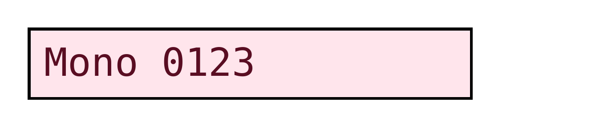


Generic monospace family fallback at 28px with fixed-advance glyphs.


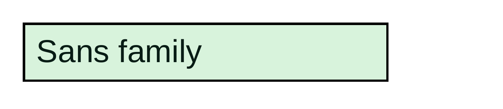

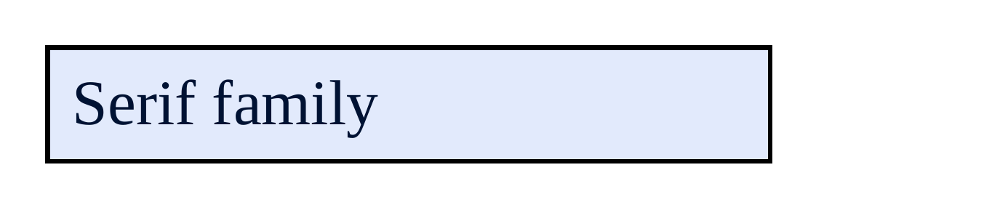


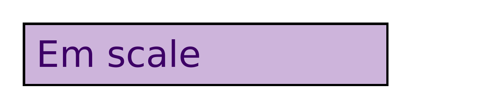


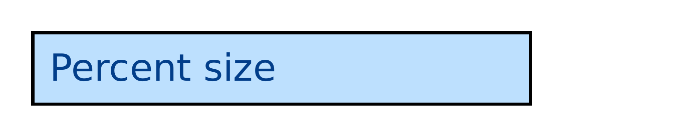

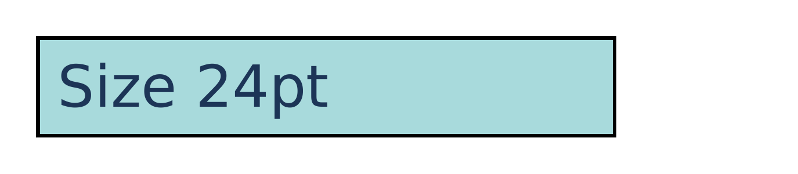


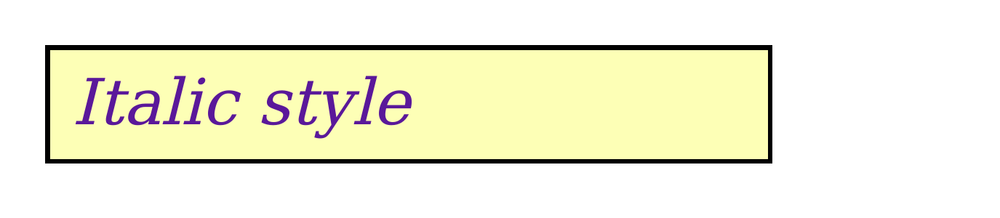


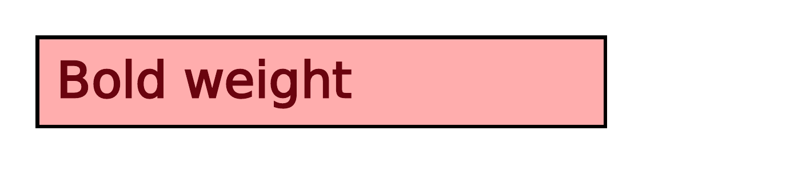


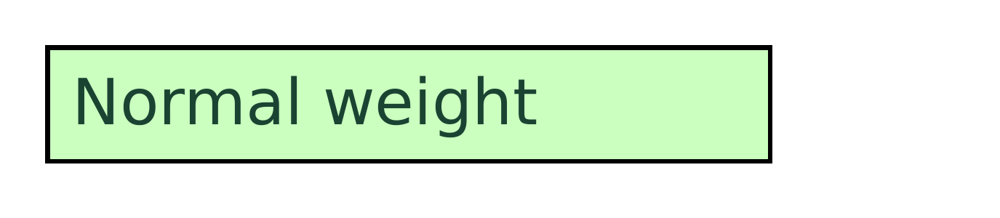

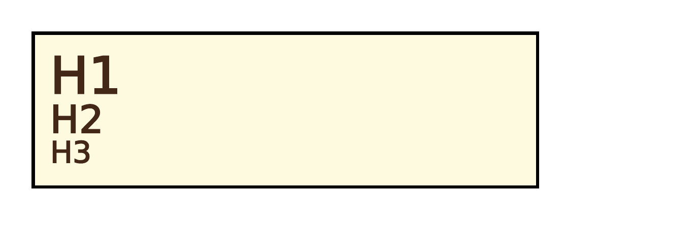
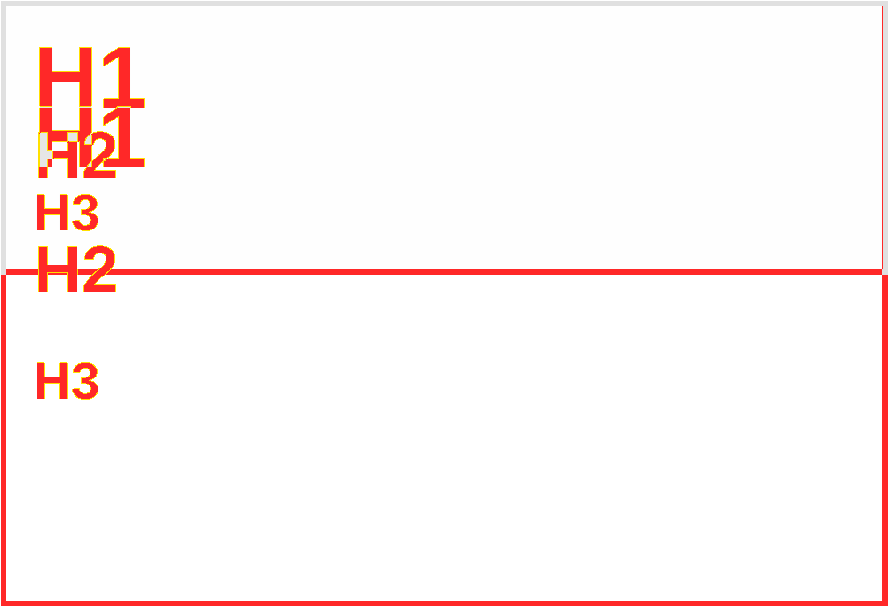
| class | regions | pixels | union bbox (CSS px) | largest px | maximum magnitude |
|---|---|---|---|---|---|
| ColorErr | 27 | 38 | 28,68 → 36,83 | 7 | total 0.01% · largest 0.002258% |
| class | bbox (CSS px) | area% | magnitude | reason |
|---|---|---|---|---|
| AntialiasCoverage | 29,76 → 31,76 | 0.002258 | ΔRGB(56,62,60) | antialiasing coverage residue on a shared outline |
| AntialiasCoverage | 34,79 → 34,79 | 0.000968 | ΔRGB(11,14,12) | antialiasing coverage residue on a shared outline |
| AntialiasCoverage | 34,69 → 34,69 | 0.000645 | ΔRGB(-11,-14,-12) | antialiasing coverage residue on a shared outline |
| AntialiasCoverage | 36,71 → 36,71 | 0.000645 | ΔRGB(-16,-19,-17) | antialiasing coverage residue on a shared outline |
| AntialiasCoverage | 36,71 → 36,72 | 0.000645 | ΔRGB(-7,-8,-8) | antialiasing coverage residue on a shared outline |
| AntialiasCoverage | 30,68 → 30,68 | 0.000323 | ΔRGB(-3,-4,-4) | antialiasing coverage residue on a shared outline |
| AntialiasCoverage | 31,68 → 31,68 | 0.000323 | ΔRGB(-22,-23,-23) | antialiasing coverage residue on a shared outline |
| AntialiasCoverage | 32,68 → 32,68 | 0.000323 | ΔRGB(-11,-12,-12) | antialiasing coverage residue on a shared outline |
| AntialiasCoverage | 29,69 → 29,69 | 0.000323 | ΔRGB(-17,-19,-18) | antialiasing coverage residue on a shared outline |
| AntialiasCoverage | 35,70 → 35,70 | 0.000323 | ΔRGB(-6,-6,-5) | antialiasing coverage residue on a shared outline |
| AntialiasCoverage | 30,71 → 30,71 | 0.000323 | ΔRGB(16,17,16) | antialiasing coverage residue on a shared outline |
| AntialiasCoverage | 31,71 → 31,71 | 0.000323 | ΔRGB(14,16,15) | antialiasing coverage residue on a shared outline |
| AntialiasCoverage | 31,71 → 31,71 | 0.000323 | ΔRGB(14,14,14) | antialiasing coverage residue on a shared outline |
| AntialiasCoverage | 32,71 → 32,71 | 0.000323 | ΔRGB(17,19,18) | antialiasing coverage residue on a shared outline |
| AntialiasCoverage | 28,71 → 28,71 | 0.000323 | ΔRGB(16,19,17) | antialiasing coverage residue on a shared outline |
| AntialiasCoverage | 29,71 → 29,71 | 0.000323 | ΔRGB(6,6,5) | antialiasing coverage residue on a shared outline |
| AntialiasCoverage | 33,71 → 33,71 | 0.000323 | ΔRGB(16,18,18) | antialiasing coverage residue on a shared outline |
| AntialiasCoverage | 36,73 → 36,73 | 0.000323 | ΔRGB(-7,-8,-8) | antialiasing coverage residue on a shared outline |
| AntialiasCoverage | 36,76 → 36,76 | 0.000323 | ΔRGB(-9,-11,-10) | antialiasing coverage residue on a shared outline |
| AntialiasCoverage | 36,77 → 36,77 | 0.000323 | ΔRGB(-11,-14,-12) | antialiasing coverage residue on a shared outline |
| AntialiasCoverage | 34,78 → 34,78 | 0.000323 | ΔRGB(6,6,5) | antialiasing coverage residue on a shared outline |
| AntialiasCoverage | 36,78 → 36,78 | 0.000323 | ΔRGB(-6,-6,-5) | antialiasing coverage residue on a shared outline |
| AntialiasCoverage | 36,79 → 36,79 | 0.000323 | ΔRGB(-11,-14,-12) | antialiasing coverage residue on a shared outline |
| AntialiasCoverage | 36,80 → 36,80 | 0.000323 | ΔRGB(-6,-6,-5) | antialiasing coverage residue on a shared outline |
| AntialiasCoverage | 29,81 → 29,81 | 0.000323 | ΔRGB(-3,-4,-4) | antialiasing coverage residue on a shared outline |
| AntialiasCoverage | 35,82 → 35,82 | 0.000323 | ΔRGB(-11,-14,-12) | antialiasing coverage residue on a shared outline |
| AntialiasCoverage | 34,83 → 34,83 | 0.000323 | ΔRGB(-14,-14,-14) | antialiasing coverage residue on a shared outline |
1<!DOCTYPE html>
2<html lang="en">
3<head>
4<meta charset="utf-8">
5<title>heading default sizes</title>
6<style>
7 @page { size: 440px 144px; margin: 0; }
8 html { font-family: ParitySans; line-height: 1.5; }
9 * { margin: 0; box-sizing: border-box; }
10 html, body { background: #ffffff; }
11 .region {
12 width: 320px;
13 margin: 20px;
14 padding: 10px;
15 border: 2px solid #000000;
16 background: #fefae0;
17 font-family: ParitySans;
18 color: #432818;
19 }
20 h1, h2, h3 { line-height: 1; }
21</style>
22</head>
23<body>
24 <div class="region">
25 <h1>H1</h1>
26 <h2>H2</h2>
27 <h3>H3</h3>
28 </div>
29</body>
30</html>
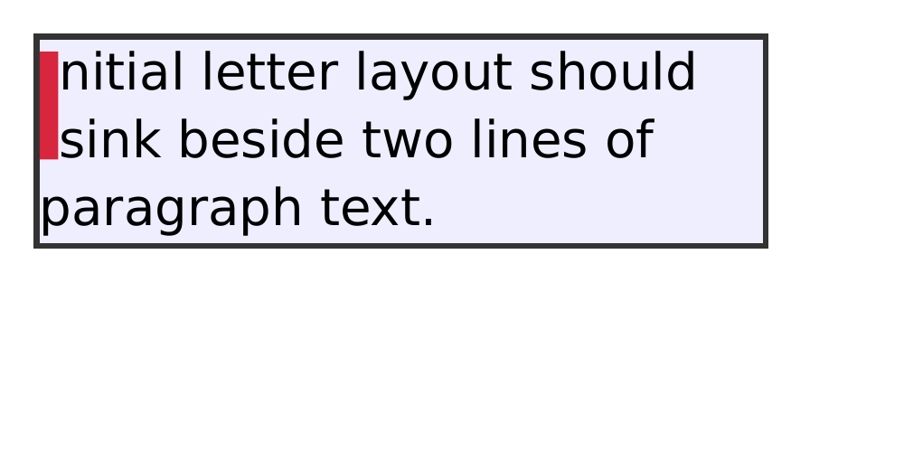
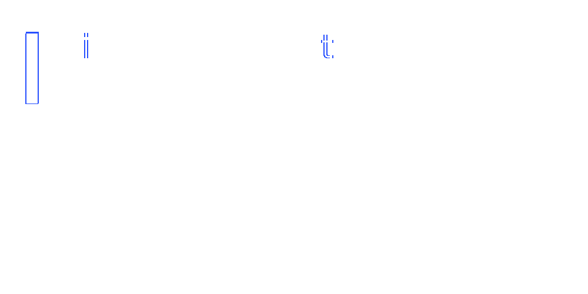
| class | regions | pixels | union bbox (CSS px) | largest px | maximum magnitude |
|---|---|---|---|---|---|
| ColorErr | 12 | 901 | 2,5 → 169,44 | 564 | total 0.5% · largest 0.3% |
| class | bbox (CSS px) | area% | magnitude | reason |
|---|---|---|---|---|
| AntialiasCoverage | 2,5 → 9,44 | 0.3 | ΔRGB(-3,-26,-25) | antialiasing coverage residue on a shared outline |
| AntialiasCoverage | 164,11 → 168,20 | 0.03 | ΔRGB(70,70,76) | antialiasing coverage residue on a shared outline |
| AntialiasCoverage | 34,10 → 34,20 | 0.03 | ΔRGB(126,126,134) | antialiasing coverage residue on a shared outline |
| AntialiasCoverage | 36,10 → 36,20 | 0.03 | ΔRGB(-86,-86,-92) | antialiasing coverage residue on a shared outline |
| AntialiasCoverage | 166,11 → 168,18 | 0.03 | ΔRGB(-76,-76,-81) | antialiasing coverage residue on a shared outline |
| AntialiasCoverage | 164,7 → 164,10 | 0.01 | ΔRGB(51,51,55) | antialiasing coverage residue on a shared outline |
| AntialiasCoverage | 166,7 → 166,10 | 0.01 | ΔRGB(-71,-71,-76) | antialiasing coverage residue on a shared outline |
| AntialiasCoverage | 34,6 → 34,8 | 0.007235 | ΔRGB(111,111,118) | antialiasing coverage residue on a shared outline |
| AntialiasCoverage | 36,6 → 36,8 | 0.007235 | ΔRGB(-86,-86,-92) | antialiasing coverage residue on a shared outline |
| AntialiasCoverage | 163,10 → 163,11 | 0.005168 | ΔRGB(118,118,127) | antialiasing coverage residue on a shared outline |
| AntialiasCoverage | 169,10 → 169,11 | 0.005168 | ΔRGB(-66,-66,-71) | antialiasing coverage residue on a shared outline |
| AntialiasCoverage | 169,18 → 169,20 | 0.005168 | ΔRGB(-66,-66,-71) | antialiasing coverage residue on a shared outline |
1<!DOCTYPE html><html><head><meta charset='utf-8'><style>@page{size:320px 160px;margin:0}html{font-family:ParitySans;line-height:1.5}*{margin:0;box-sizing:border-box}body{padding:12px;background:#fff}p{width:260px;font-size:18px;line-height:24px;background:#eef;border:2px solid #333}p::first-letter{initial-letter:2;color:#d7263d;font-weight:bold}</style></head><body><p>Initial letter layout should sink beside two lines of paragraph text.</p></body></html>
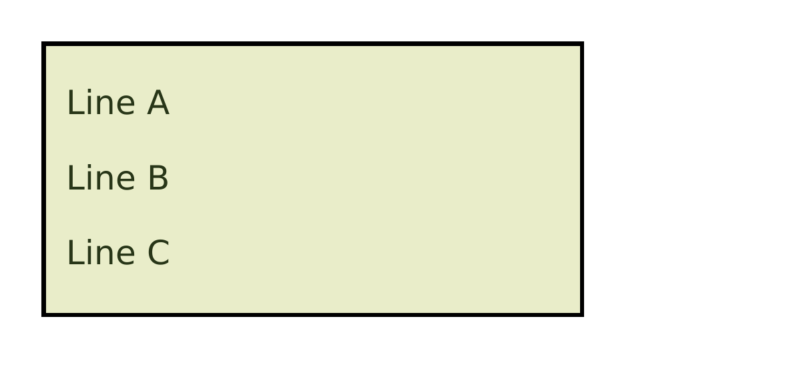

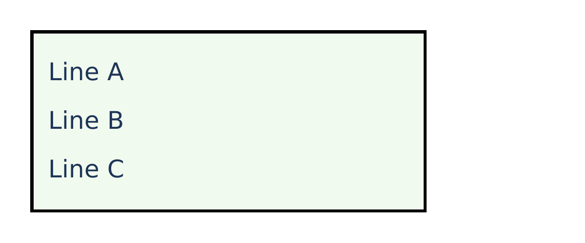


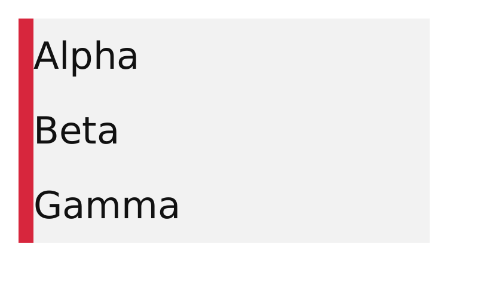


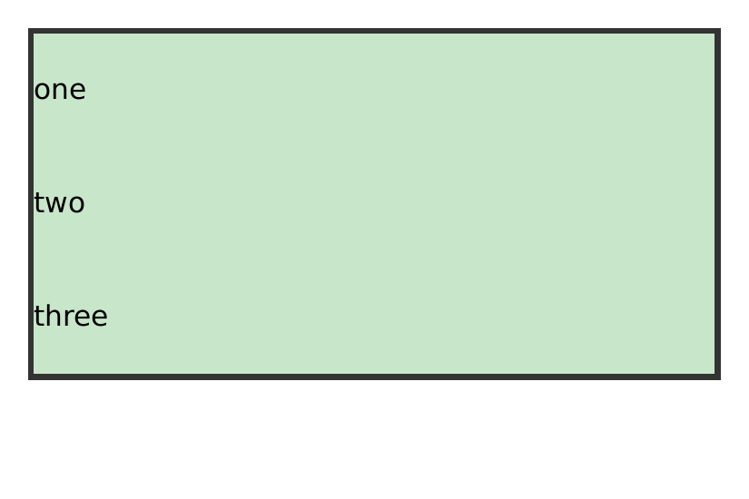

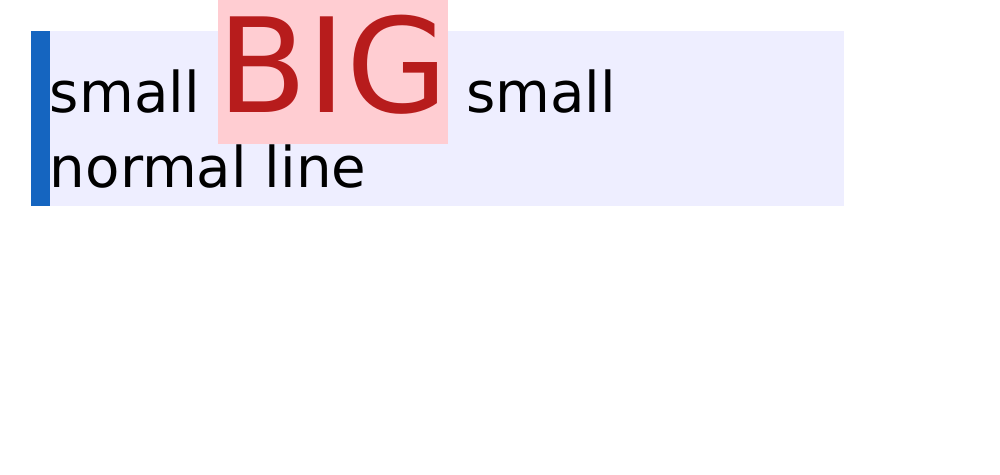
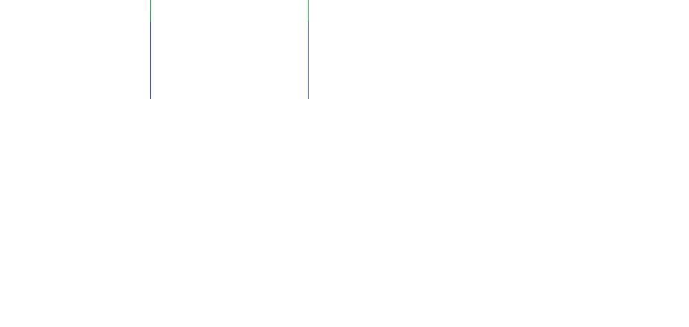
| class | regions | pixels | union bbox (CSS px) | largest px | maximum magnitude |
|---|---|---|---|---|---|
| Extra | 2 | 62 | 60,0 → 133,10 | 31 | total 0.04% · largest 0.02% |
| ColorErr | 2 | 226 | 60,10 → 133,46 | 113 | total 0.1% · largest 0.07% |
| class | bbox (CSS px) | area% | magnitude | reason |
|---|---|---|---|---|
| AntialiasCoverage | 60,10 → 60,46 | 0.07 | ΔRGB(17,-33,-45) | antialiasing coverage residue on a shared outline |
| AntialiasCoverage | 133,10 → 133,46 | 0.07 | ΔRGB(17,-33,-45) | antialiasing coverage residue on a shared outline |
| Extra | 60,0 → 60,10 | 0.02 | candidate adds paint absent from reference (0.02%) | |
| Extra | 133,0 → 133,10 | 0.02 | candidate adds paint absent from reference (0.02%) |
1<!DOCTYPE html><html><head><meta charset='utf-8'><style>@page{size:320px 152px;margin:0}html{font-family:ParitySans;line-height:1.5}*{margin:0;box-sizing:border-box}body{padding:10px;background:#fff}p{width:260px;font-size:18px;line-height:24px;background:#eef;border-left:6px solid #1565c0}.big{font-size:42px;background:#ffcdd2;color:#b71c1c}</style></head><body><p>small <span class='big'>BIG</span> small<br>normal line</p></body></html>
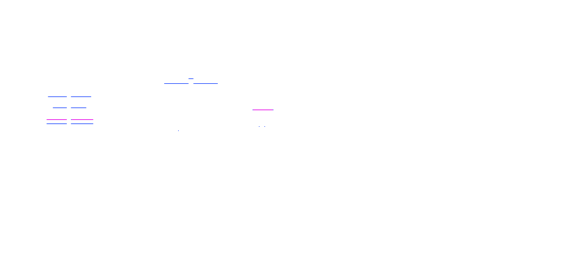
| class | regions | pixels | union bbox (CSS px) | largest px | maximum magnitude |
|---|---|---|---|---|---|
| ColorErr | 15 | 242 | 2,13 → 106,37 | 35 | total 0.6% · largest 0.08% |
| Missing | 3 | 88 | 2,27 → 106,32 | 31 | total 0.2% · largest 0.07% |
| class | bbox (CSS px) | area% | magnitude | reason |
|---|---|---|---|---|
| AntialiasCoverage | 56,15 → 67,15 | 0.08 | ΔRGB(71,71,71) | antialiasing coverage residue on a shared outline |
| AntialiasCoverage | 70,15 → 81,15 | 0.08 | ΔRGB(71,71,71) | antialiasing coverage residue on a shared outline |
| AntialiasCoverage | 13,34 → 23,34 | 0.08 | ΔRGB(-54,-54,-54) | antialiasing coverage residue on a shared outline |
| Missing | 14,32 → 23,32 | 0.07 | candidate lacks paint present in reference (0.07%) | |
| Missing | 2,32 → 11,32 | 0.07 | candidate lacks paint present in reference (0.07%) | |
| AntialiasCoverage | 13,21 → 22,21 | 0.07 | ΔRGB(54,54,54) | antialiasing coverage residue on a shared outline |
| AntialiasCoverage | 2,34 → 11,34 | 0.07 | ΔRGB(-54,-54,-54) | antialiasing coverage residue on a shared outline |
| Missing | 97,27 → 106,27 | 0.07 | candidate lacks paint present in reference (0.07%) | |
| AntialiasCoverage | 3,21 → 11,21 | 0.06 | ΔRGB(54,54,54) | antialiasing coverage residue on a shared outline |
| AntialiasCoverage | 13,26 → 20,26 | 0.05 | ΔRGB(-71,-71,-71) | antialiasing coverage residue on a shared outline |
| AntialiasCoverage | 5,26 → 11,26 | 0.05 | ΔRGB(-71,-71,-71) | antialiasing coverage residue on a shared outline |
| AntialiasCoverage | 68,13 → 69,13 | 0.02 | ΔRGB(71,71,71) | antialiasing coverage residue on a shared outline |
| AntialiasCoverage | 97,27 → 97,27 | 0.002383 | ΔRGB(40,40,40) | antialiasing coverage residue on a shared outline |
| AntialiasCoverage | 106,27 → 106,27 | 0.002383 | ΔRGB(20,20,20) | antialiasing coverage residue on a shared outline |
| AntialiasCoverage | 13,32 → 13,32 | 0.002383 | ΔRGB(20,20,20) | antialiasing coverage residue on a shared outline |
| AntialiasCoverage | 100,35 → 100,35 | 0.002383 | ΔRGB(10,10,10) | antialiasing coverage residue on a shared outline |
| AntialiasCoverage | 102,35 → 102,35 | 0.002383 | ΔRGB(-4,-4,-4) | antialiasing coverage residue on a shared outline |
| AntialiasCoverage | 63,37 → 63,37 | 0.002383 | ΔRGB(-7,-7,-7) | antialiasing coverage residue on a shared outline |
1<!DOCTYPE html><html><head><meta charset='utf-8'><style>@page{size:264px 120px;margin:0}html{font-family:ParitySans;line-height:1.5}*{margin:0;box-sizing:border-box}body{padding:18px;background:#fff;font-size:28px}.t{text-emphasis:filled dot #d7263d;text-emphasis-position:over right;color:#111}</style></head><body><span class='t'>重要事項</span></body></html>
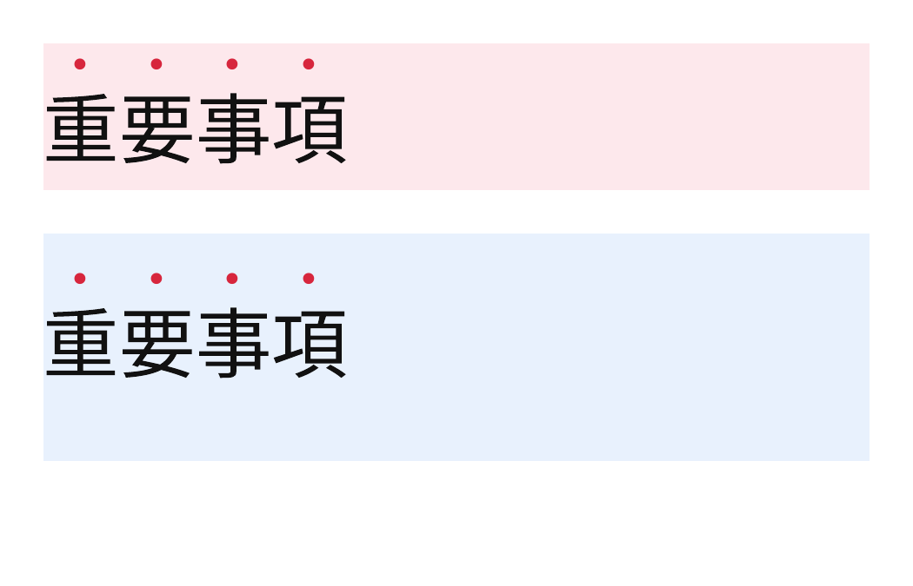
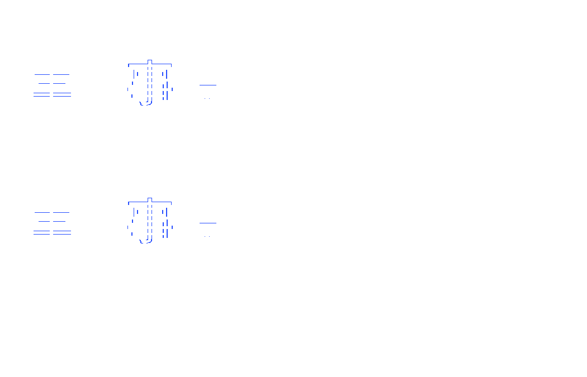
| class | regions | pixels | union bbox (CSS px) | largest px | maximum magnitude |
|---|---|---|---|---|---|
| ColorErr | 78 | 1386 | 3,18 → 108,123 | 107 | total 0.3% · largest 0.02% |
| class | bbox (CSS px) | area% | magnitude | reason |
|---|---|---|---|---|
| AntialiasCoverage | 57,18 → 82,22 | 0.02 | ΔRGB(70,64,65) | antialiasing coverage residue on a shared outline |
| AntialiasCoverage | 57,97 → 82,101 | 0.02 | ΔRGB(64,66,70) | antialiasing coverage residue on a shared outline |
| AntialiasCoverage | 79,24 → 79,29 | 0.007003 | ΔRGB(134,122,124) | antialiasing coverage residue on a shared outline |
| AntialiasCoverage | 79,36 → 80,41 | 0.007003 | ΔRGB(99,90,92) | antialiasing coverage residue on a shared outline |
| AntialiasCoverage | 14,37 → 24,37 | 0.007003 | ΔRGB(30,27,28) | antialiasing coverage residue on a shared outline |
| AntialiasCoverage | 14,39 → 24,39 | 0.007003 | ΔRGB(-54,-49,-50) | antialiasing coverage residue on a shared outline |
| AntialiasCoverage | 79,103 → 79,108 | 0.007003 | ΔRGB(122,127,134) | antialiasing coverage residue on a shared outline |
| AntialiasCoverage | 79,115 → 80,120 | 0.007003 | ΔRGB(90,94,99) | antialiasing coverage residue on a shared outline |
| AntialiasCoverage | 14,116 → 24,116 | 0.007003 | ΔRGB(27,29,30) | antialiasing coverage residue on a shared outline |
| AntialiasCoverage | 14,118 → 24,118 | 0.007003 | ΔRGB(-49,-51,-54) | antialiasing coverage residue on a shared outline |
| AntialiasCoverage | 98,33 → 108,33 | 0.006565 | ΔRGB(30,27,28) | antialiasing coverage residue on a shared outline |
| AntialiasCoverage | 98,112 → 108,112 | 0.006565 | ΔRGB(27,29,30) | antialiasing coverage residue on a shared outline |
| AntialiasCoverage | 14,27 → 23,27 | 0.006346 | ΔRGB(54,49,50) | antialiasing coverage residue on a shared outline |
| AntialiasCoverage | 3,37 → 12,37 | 0.006346 | ΔRGB(30,27,28) | antialiasing coverage residue on a shared outline |
| AntialiasCoverage | 3,39 → 12,39 | 0.006346 | ΔRGB(-54,-49,-50) | antialiasing coverage residue on a shared outline |
| AntialiasCoverage | 14,106 → 23,106 | 0.006346 | ΔRGB(49,51,54) | antialiasing coverage residue on a shared outline |
| AntialiasCoverage | 3,116 → 12,116 | 0.006346 | ΔRGB(27,29,30) | antialiasing coverage residue on a shared outline |
| AntialiasCoverage | 3,118 → 12,118 | 0.006346 | ΔRGB(-49,-51,-54) | antialiasing coverage residue on a shared outline |
| AntialiasCoverage | 4,27 → 12,27 | 0.005909 | ΔRGB(54,49,50) | antialiasing coverage residue on a shared outline |
| AntialiasCoverage | 4,106 → 12,106 | 0.005909 | ΔRGB(49,51,54) | antialiasing coverage residue on a shared outline |
| AntialiasCoverage | 68,40 → 71,44 | 0.005471 | ΔRGB(117,107,109) | antialiasing coverage residue on a shared outline |
| AntialiasCoverage | 68,119 → 71,123 | 0.005471 | ΔRGB(107,111,117) | antialiasing coverage residue on a shared outline |
| AntialiasCoverage | 79,31 → 80,34 | 0.005252 | ΔRGB(84,76,78) | antialiasing coverage residue on a shared outline |
| AntialiasCoverage | 79,110 → 80,113 | 0.005252 | ΔRGB(76,80,84) | antialiasing coverage residue on a shared outline |
| AntialiasCoverage | 14,32 → 21,32 | 0.004815 | ΔRGB(-70,-64,-65) | antialiasing coverage residue on a shared outline |
| AntialiasCoverage | 14,111 → 21,111 | 0.004815 | ΔRGB(-64,-66,-70) | antialiasing coverage residue on a shared outline |
| AntialiasCoverage | 6,32 → 12,32 | 0.004377 | ΔRGB(-70,-64,-65) | antialiasing coverage residue on a shared outline |
| AntialiasCoverage | 6,111 → 12,111 | 0.004377 | ΔRGB(-64,-66,-70) | antialiasing coverage residue on a shared outline |
| AntialiasCoverage | 60,24 → 60,29 | 0.003501 | ΔRGB(-236,-215,-219) | antialiasing coverage residue on a shared outline |
| AntialiasCoverage | 64,42 → 66,44 | 0.003501 | ΔRGB(-42,-38,-39) | antialiasing coverage residue on a shared outline |
| AntialiasCoverage | 60,103 → 60,108 | 0.003501 | ΔRGB(-215,-224,-236) | antialiasing coverage residue on a shared outline |
| AntialiasCoverage | 64,121 → 66,123 | 0.003501 | ΔRGB(-38,-40,-42) | antialiasing coverage residue on a shared outline |
| AntialiasCoverage | 62,25 → 63,27 | 0.003064 | ΔRGB(87,80,81) | antialiasing coverage residue on a shared outline |
| AntialiasCoverage | 77,25 → 77,27 | 0.003064 | ΔRGB(-82,-75,-76) | antialiasing coverage residue on a shared outline |
| AntialiasCoverage | 77,32 → 77,34 | 0.003064 | ΔRGB(-33,-31,-31) | antialiasing coverage residue on a shared outline |
| AntialiasCoverage | 77,36 → 77,38 | 0.003064 | ΔRGB(-33,-31,-31) | antialiasing coverage residue on a shared outline |
| AntialiasCoverage | 62,104 → 63,106 | 0.003064 | ΔRGB(80,82,87) | antialiasing coverage residue on a shared outline |
| AntialiasCoverage | 77,104 → 77,106 | 0.003064 | ΔRGB(-75,-78,-82) | antialiasing coverage residue on a shared outline |
| AntialiasCoverage | 77,111 → 77,113 | 0.003064 | ΔRGB(-31,-31,-33) | antialiasing coverage residue on a shared outline |
| AntialiasCoverage | 77,115 → 77,117 | 0.003064 | ΔRGB(-31,-31,-33) | antialiasing coverage residue on a shared outline |
| AntialiasCoverage | 68,40 → 68,42 | 0.002845 | ΔRGB(-206,-188,-191) | antialiasing coverage residue on a shared outline |
| AntialiasCoverage | 68,119 → 68,121 | 0.002845 | ΔRGB(-188,-195,-206) | antialiasing coverage residue on a shared outline |
| AntialiasCoverage | 60,31 → 60,32 | 0.002626 | ΔRGB(-84,-76,-78) | antialiasing coverage residue on a shared outline |
| AntialiasCoverage | 82,34 → 83,36 | 0.002626 | ΔRGB(82,75,76) | antialiasing coverage residue on a shared outline |
| AntialiasCoverage | 59,38 → 60,40 | 0.002626 | ΔRGB(-84,-76,-78) | antialiasing coverage residue on a shared outline |
| AntialiasCoverage | 60,110 → 60,111 | 0.002626 | ΔRGB(-76,-80,-84) | antialiasing coverage residue on a shared outline |
| AntialiasCoverage | 82,113 → 83,115 | 0.002626 | ΔRGB(75,78,82) | antialiasing coverage residue on a shared outline |
| AntialiasCoverage | 59,117 → 60,119 | 0.002626 | ΔRGB(-76,-80,-84) | antialiasing coverage residue on a shared outline |
| AntialiasCoverage | 77,40 → 77,41 | 0.002188 | ΔRGB(-30,-27,-28) | antialiasing coverage residue on a shared outline |
| AntialiasCoverage | 77,119 → 77,120 | 0.002188 | ΔRGB(-27,-29,-30) | antialiasing coverage residue on a shared outline |
| AntialiasCoverage | 68,25 → 68,27 | 0.001532 | ΔRGB(-236,-215,-219) | antialiasing coverage residue on a shared outline |
| AntialiasCoverage | 71,25 → 71,27 | 0.001532 | ΔRGB(236,215,219) | antialiasing coverage residue on a shared outline |
| AntialiasCoverage | 68,29 → 68,31 | 0.001532 | ΔRGB(-236,-215,-219) | antialiasing coverage residue on a shared outline |
| AntialiasCoverage | 71,29 → 71,31 | 0.001532 | ΔRGB(236,215,219) | antialiasing coverage residue on a shared outline |
| AntialiasCoverage | 68,32 → 68,34 | 0.001532 | ΔRGB(-236,-215,-219) | antialiasing coverage residue on a shared outline |
| AntialiasCoverage | 71,32 → 71,34 | 0.001532 | ΔRGB(236,215,219) | antialiasing coverage residue on a shared outline |
| AntialiasCoverage | 68,36 → 68,38 | 0.001532 | ΔRGB(-236,-215,-219) | antialiasing coverage residue on a shared outline |
| AntialiasCoverage | 71,36 → 71,38 | 0.001532 | ΔRGB(236,215,219) | antialiasing coverage residue on a shared outline |
| AntialiasCoverage | 68,104 → 68,106 | 0.001532 | ΔRGB(-215,-224,-236) | antialiasing coverage residue on a shared outline |
| AntialiasCoverage | 71,104 → 71,106 | 0.001532 | ΔRGB(215,224,236) | antialiasing coverage residue on a shared outline |
| AntialiasCoverage | 68,108 → 68,110 | 0.001532 | ΔRGB(-215,-224,-236) | antialiasing coverage residue on a shared outline |
| AntialiasCoverage | 71,108 → 71,110 | 0.001532 | ΔRGB(215,224,236) | antialiasing coverage residue on a shared outline |
| AntialiasCoverage | 68,111 → 68,113 | 0.001532 | ΔRGB(-215,-224,-236) | antialiasing coverage residue on a shared outline |
| AntialiasCoverage | 71,111 → 71,113 | 0.001532 | ΔRGB(215,224,236) | antialiasing coverage residue on a shared outline |
1<!doctype html>
2<html>
3<head>
4 <meta charset="utf-8">
5 <style>
6 @page { size: 336px 216px; margin: 0 }
7 * { box-sizing: border-box; margin: 0 }
8 html { font-family: ParitySans }
9 body { padding: 16px; color: #111; font-size: 28px }
10 .line { width: 304px }
11 .tight { line-height: 1.5; background: #fde8ec }
12 .roomy { margin-top: 16px; line-height: 3; background: #e8f1fd }
13 .em { text-emphasis: filled dot #d7263d; text-emphasis-position: over right }
14 </style>
15</head>
16<body>
17 <p class="line tight"><span class="em">重要事項</span></p>
18 <p class="line roomy"><span class="em">重要事項</span></p>
19</body>
20</html>
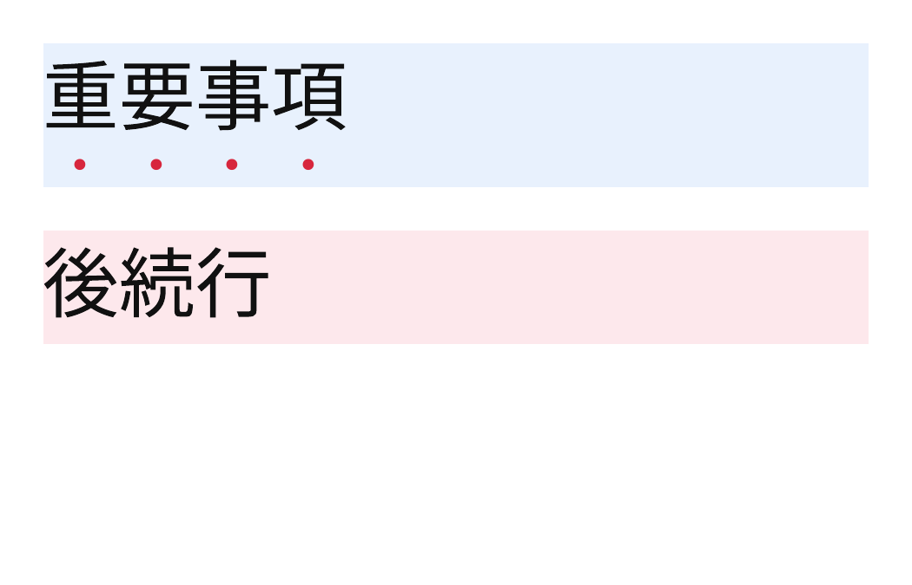
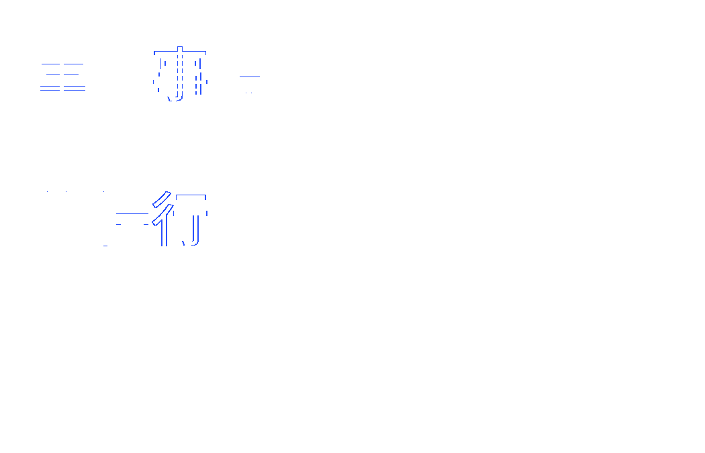
| class | regions | pixels | union bbox (CSS px) | largest px | maximum magnitude |
|---|---|---|---|---|---|
| ColorErr | 56 | 1472 | 3,6 → 108,101 | 306 | total 0.4% · largest 0.09% |
| class | bbox (CSS px) | area% | magnitude | reason |
|---|---|---|---|---|
| AntialiasCoverage | 56,81 → 67,101 | 0.09 | ΔRGB(4,4,4) | antialiasing coverage residue on a shared outline |
| AntialiasCoverage | 57,75 → 65,83 | 0.04 | ΔRGB(-4,-4,-4) | antialiasing coverage residue on a shared outline |
| AntialiasCoverage | 57,6 → 82,10 | 0.03 | ΔRGB(64,66,70) | antialiasing coverage residue on a shared outline |
| AntialiasCoverage | 76,87 → 78,101 | 0.03 | ΔRGB(84,76,78) | antialiasing coverage residue on a shared outline |
| AntialiasCoverage | 76,87 → 76,99 | 0.02 | ΔRGB(-87,-80,-81) | antialiasing coverage residue on a shared outline |
| AntialiasCoverage | 68,77 → 82,79 | 0.02 | ΔRGB(54,49,50) | antialiasing coverage residue on a shared outline |
| AntialiasCoverage | 39,86 → 54,86 | 0.01 | ΔRGB(54,49,50) | antialiasing coverage residue on a shared outline |
| AntialiasCoverage | 79,12 → 79,17 | 0.009707 | ΔRGB(122,127,134) | antialiasing coverage residue on a shared outline |
| AntialiasCoverage | 79,24 → 80,29 | 0.009707 | ΔRGB(90,94,99) | antialiasing coverage residue on a shared outline |
| AntialiasCoverage | 14,25 → 24,25 | 0.009707 | ΔRGB(27,29,30) | antialiasing coverage residue on a shared outline |
| AntialiasCoverage | 14,27 → 24,27 | 0.009707 | ΔRGB(-49,-51,-54) | antialiasing coverage residue on a shared outline |
| AntialiasCoverage | 98,20 → 108,20 | 0.009101 | ΔRGB(27,29,30) | antialiasing coverage residue on a shared outline |
| AntialiasCoverage | 14,14 → 23,14 | 0.008797 | ΔRGB(49,51,54) | antialiasing coverage residue on a shared outline |
| AntialiasCoverage | 3,25 → 12,25 | 0.008797 | ΔRGB(27,29,30) | antialiasing coverage residue on a shared outline |
| AntialiasCoverage | 3,27 → 12,27 | 0.008797 | ΔRGB(-49,-51,-54) | antialiasing coverage residue on a shared outline |
| AntialiasCoverage | 4,14 → 12,14 | 0.008191 | ΔRGB(49,51,54) | antialiasing coverage residue on a shared outline |
| AntialiasCoverage | 68,28 → 71,32 | 0.007584 | ΔRGB(107,111,117) | antialiasing coverage residue on a shared outline |
| AntialiasCoverage | 79,19 → 80,22 | 0.007280 | ΔRGB(76,80,84) | antialiasing coverage residue on a shared outline |
| AntialiasCoverage | 14,20 → 21,20 | 0.006674 | ΔRGB(-64,-66,-70) | antialiasing coverage residue on a shared outline |
| AntialiasCoverage | 6,20 → 12,20 | 0.006067 | ΔRGB(-64,-66,-70) | antialiasing coverage residue on a shared outline |
| AntialiasCoverage | 60,12 → 60,17 | 0.004854 | ΔRGB(-215,-224,-236) | antialiasing coverage residue on a shared outline |
| AntialiasCoverage | 64,30 → 66,32 | 0.004854 | ΔRGB(-38,-40,-42) | antialiasing coverage residue on a shared outline |
| AntialiasCoverage | 82,84 → 83,87 | 0.004854 | ΔRGB(82,75,76) | antialiasing coverage residue on a shared outline |
| AntialiasCoverage | 71,99 → 72,101 | 0.004550 | ΔRGB(-112,-102,-104) | antialiasing coverage residue on a shared outline |
| AntialiasCoverage | 62,13 → 63,15 | 0.004247 | ΔRGB(80,82,87) | antialiasing coverage residue on a shared outline |
| AntialiasCoverage | 77,13 → 77,15 | 0.004247 | ΔRGB(-75,-78,-82) | antialiasing coverage residue on a shared outline |
| AntialiasCoverage | 77,20 → 77,22 | 0.004247 | ΔRGB(-31,-31,-33) | antialiasing coverage residue on a shared outline |
| AntialiasCoverage | 77,24 → 77,26 | 0.004247 | ΔRGB(-31,-31,-33) | antialiasing coverage residue on a shared outline |
| AntialiasCoverage | 68,28 → 68,30 | 0.003944 | ΔRGB(-188,-195,-206) | antialiasing coverage residue on a shared outline |
| AntialiasCoverage | 60,19 → 60,20 | 0.003640 | ΔRGB(-76,-80,-84) | antialiasing coverage residue on a shared outline |
| AntialiasCoverage | 82,22 → 83,24 | 0.003640 | ΔRGB(75,78,82) | antialiasing coverage residue on a shared outline |
| AntialiasCoverage | 59,26 → 60,28 | 0.003640 | ΔRGB(-76,-80,-84) | antialiasing coverage residue on a shared outline |
| AntialiasCoverage | 77,28 → 77,29 | 0.003034 | ΔRGB(-27,-29,-30) | antialiasing coverage residue on a shared outline |
| AntialiasCoverage | 67,84 → 67,87 | 0.002427 | ΔRGB(-236,-215,-219) | antialiasing coverage residue on a shared outline |
| AntialiasCoverage | 68,13 → 68,15 | 0.002123 | ΔRGB(-215,-224,-236) | antialiasing coverage residue on a shared outline |
| AntialiasCoverage | 71,13 → 71,15 | 0.002123 | ΔRGB(215,224,236) | antialiasing coverage residue on a shared outline |
| AntialiasCoverage | 68,17 → 68,19 | 0.002123 | ΔRGB(-215,-224,-236) | antialiasing coverage residue on a shared outline |
| AntialiasCoverage | 71,17 → 71,19 | 0.002123 | ΔRGB(215,224,236) | antialiasing coverage residue on a shared outline |
| AntialiasCoverage | 68,20 → 68,22 | 0.002123 | ΔRGB(-215,-224,-236) | antialiasing coverage residue on a shared outline |
| AntialiasCoverage | 71,20 → 71,22 | 0.002123 | ΔRGB(215,224,236) | antialiasing coverage residue on a shared outline |
| AntialiasCoverage | 68,24 → 68,26 | 0.002123 | ΔRGB(-215,-224,-236) | antialiasing coverage residue on a shared outline |
| AntialiasCoverage | 71,24 → 71,26 | 0.002123 | ΔRGB(215,224,236) | antialiasing coverage residue on a shared outline |
| AntialiasCoverage | 39,91 → 41,91 | 0.002123 | ΔRGB(-70,-64,-65) | antialiasing coverage residue on a shared outline |
| AntialiasCoverage | 52,91 → 54,91 | 0.002123 | ΔRGB(-70,-64,-65) | antialiasing coverage residue on a shared outline |
| AntialiasCoverage | 57,22 → 57,24 | 0.001820 | ΔRGB(-215,-224,-236) | antialiasing coverage residue on a shared outline |
| AntialiasCoverage | 33,101 → 35,101 | 0.001820 | ΔRGB(30,27,28) | antialiasing coverage residue on a shared outline |
| AntialiasCoverage | 68,10 → 68,12 | 0.001517 | ΔRGB(-215,-224,-236) | antialiasing coverage residue on a shared outline |
| AntialiasCoverage | 71,10 → 71,12 | 0.001517 | ΔRGB(215,224,236) | antialiasing coverage residue on a shared outline |
| AntialiasCoverage | 68,32 → 68,32 | 0.000607 | ΔRGB(17,19,19) | antialiasing coverage residue on a shared outline |
| AntialiasCoverage | 75,101 → 76,101 | 0.000607 | ΔRGB(51,47,47) | antialiasing coverage residue on a shared outline |
| AntialiasCoverage | 101,28 → 101,28 | 0.000303 | ΔRGB(9,10,10) | antialiasing coverage residue on a shared outline |
| AntialiasCoverage | 104,28 → 104,28 | 0.000303 | ΔRGB(-4,-4,-4) | antialiasing coverage residue on a shared outline |
| AntialiasCoverage | 6,75 → 6,75 | 0.000303 | ΔRGB(16,16,15) | antialiasing coverage residue on a shared outline |
| AntialiasCoverage | 15,75 → 15,75 | 0.000303 | ΔRGB(14,13,13) | antialiasing coverage residue on a shared outline |
| AntialiasCoverage | 33,75 → 33,75 | 0.000303 | ΔRGB(16,16,15) | antialiasing coverage residue on a shared outline |
| AntialiasCoverage | 76,99 → 76,99 | 0.000303 | ΔRGB(-82,-75,-76) | antialiasing coverage residue on a shared outline |
1<!doctype html>
2<html lang="en">
3<head>
4<meta charset="utf-8">
5<style>
6 @page { size: 336px 216px; margin: 0; }
7 * { box-sizing: border-box; margin: 0; }
8 html { font-family: ParitySans, sans-serif; }
9 body { padding: 16px; color: #111; font-size: 28px; }
10 .under { line-height: 1.5; background: #e8f1fd; }
11 .following { margin-top: 16px; line-height: 1.5; background: #fde8ec; }
12 .em {
13 color: #111;
14 text-emphasis: filled dot #d7263d;
15 text-emphasis-position: under right;
16 }
17</style>
18</head>
19<body>
20<p class="under"><span class="em">重要事項</span></p>
21<p class="following">後続行</p>
22</body>
23</html>
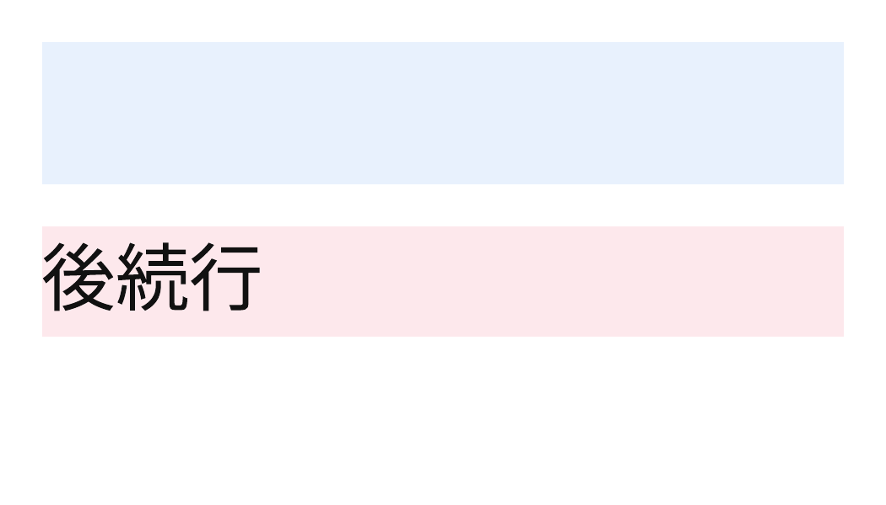
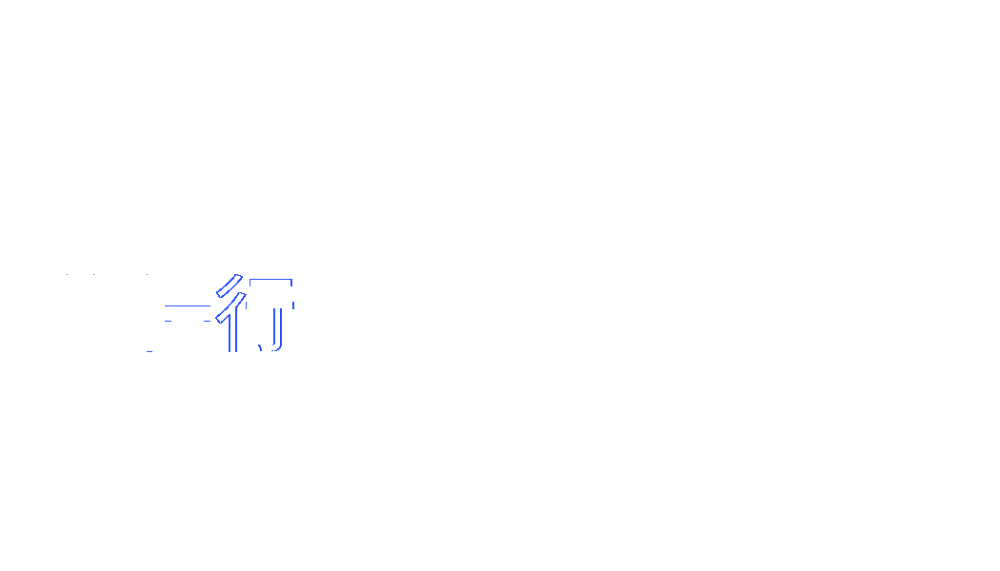
| class | regions | pixels | union bbox (CSS px) | largest px | maximum magnitude |
|---|---|---|---|---|---|
| ColorErr | 17 | 779 | 6,76 → 83,102 | 306 | total 0.2% · largest 0.09% |
| class | bbox (CSS px) | area% | magnitude | reason |
|---|---|---|---|---|
| AntialiasCoverage | 56,82 → 67,102 | 0.09 | ΔRGB(4,4,4) | antialiasing coverage residue on a shared outline |
| AntialiasCoverage | 57,76 → 65,84 | 0.04 | ΔRGB(-4,-4,-4) | antialiasing coverage residue on a shared outline |
| AntialiasCoverage | 76,88 → 78,102 | 0.03 | ΔRGB(84,76,78) | antialiasing coverage residue on a shared outline |
| AntialiasCoverage | 76,88 → 76,100 | 0.02 | ΔRGB(-87,-80,-81) | antialiasing coverage residue on a shared outline |
| AntialiasCoverage | 68,78 → 82,80 | 0.02 | ΔRGB(54,49,50) | antialiasing coverage residue on a shared outline |
| AntialiasCoverage | 39,87 → 54,87 | 0.01 | ΔRGB(54,49,50) | antialiasing coverage residue on a shared outline |
| AntialiasCoverage | 82,85 → 83,88 | 0.004812 | ΔRGB(82,75,76) | antialiasing coverage residue on a shared outline |
| AntialiasCoverage | 71,100 → 72,102 | 0.004511 | ΔRGB(-112,-102,-104) | antialiasing coverage residue on a shared outline |
| AntialiasCoverage | 67,85 → 67,88 | 0.002406 | ΔRGB(-236,-215,-219) | antialiasing coverage residue on a shared outline |
| AntialiasCoverage | 39,92 → 41,92 | 0.002105 | ΔRGB(-70,-64,-65) | antialiasing coverage residue on a shared outline |
| AntialiasCoverage | 52,92 → 54,92 | 0.002105 | ΔRGB(-70,-64,-65) | antialiasing coverage residue on a shared outline |
| AntialiasCoverage | 33,102 → 35,102 | 0.001805 | ΔRGB(30,27,28) | antialiasing coverage residue on a shared outline |
| AntialiasCoverage | 75,102 → 76,102 | 0.000602 | ΔRGB(51,47,47) | antialiasing coverage residue on a shared outline |
| AntialiasCoverage | 6,76 → 6,76 | 0.000301 | ΔRGB(16,16,15) | antialiasing coverage residue on a shared outline |
| AntialiasCoverage | 15,76 → 15,76 | 0.000301 | ΔRGB(14,13,13) | antialiasing coverage residue on a shared outline |
| AntialiasCoverage | 33,76 → 33,76 | 0.000301 | ΔRGB(16,16,15) | antialiasing coverage residue on a shared outline |
| AntialiasCoverage | 76,100 → 76,100 | 0.000301 | ΔRGB(-82,-75,-76) | antialiasing coverage residue on a shared outline |
1<!doctype html>
2<html lang="en">
3<head>
4<meta charset="utf-8">
5<style>
6 @page { size: 336px 192px; margin: 0; }
7 * { box-sizing: border-box; margin: 0; }
8 html { font-family: ParitySans, sans-serif; }
9 body { padding: 16px; color: #111; font-size: 28px; }
10 .space { line-height: 1.5; white-space: pre; background: #e8f1fd; }
11 .following { margin-top: 16px; line-height: 1.5; background: #fde8ec; }
12 .em { text-emphasis: filled dot #d7263d; }
13</style>
14</head>
15<body>
16<p class="space"><span class="em"> </span></p>
17<p class="following">後続行</p>
18</body>
19</html>
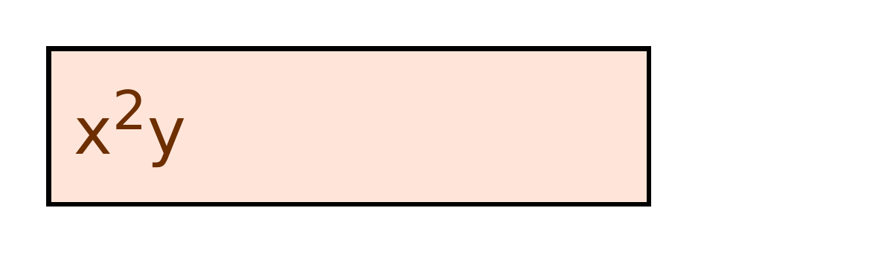
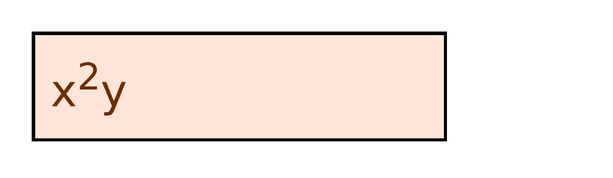
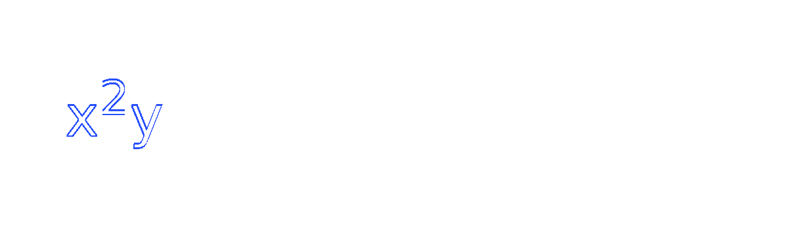
| class | regions | pixels | union bbox (CSS px) | largest px | maximum magnitude |
|---|---|---|---|---|---|
| ColorErr | 5 | 1687 | 12,19 → 59,53 | 581 | total 1.0% · largest 0.3% |
| class | bbox (CSS px) | area% | magnitude | reason |
|---|---|---|---|---|
| AntialiasCoverage | 12,31 → 27,47 | 0.3 | ΔRGB(2,2,2) | antialiasing coverage residue on a shared outline |
| AntialiasCoverage | 44,31 → 59,53 | 0.3 | ΔRGB(1,1,1) | antialiasing coverage residue on a shared outline |
| AntialiasCoverage | 30,19 → 41,34 | 0.2 | ΔRGB(23,28,34) | antialiasing coverage residue on a shared outline |
| AntialiasCoverage | 30,20 → 38,34 | 0.1 | ΔRGB(1,1,1) | antialiasing coverage residue on a shared outline |
| AntialiasCoverage | 30,36 → 41,36 | 0.04 | ΔRGB(-146,-183,-217) | antialiasing coverage residue on a shared outline |
1<!DOCTYPE html>
2<html lang="en">
3<head>
4<meta charset="utf-8">
5<title>vertical-align sup</title>
6<style>
7 @page { size: 384px 112px; margin: 0; }
8 html { font-family: ParitySans; line-height: 1.5; }
9 * { margin: 0; box-sizing: border-box; }
10 html, body { background: #ffffff; }
11 .region {
12 width: 260px;
13 margin: 20px;
14 padding: 10px;
15 border: 2px solid #000000;
16 background: #ffe5d9;
17 }
18 .t {
19 font-family: ParitySans;
20 font-size: 28px;
21 line-height: 1.4;
22 color: #6d2e00;
23 }
24</style>
25</head>
26<body>
27 <div class="region">
28 <div class="t">x<sup>2</sup>y</div>
29 </div>
30</body>
31</html>
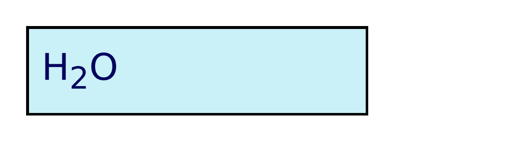
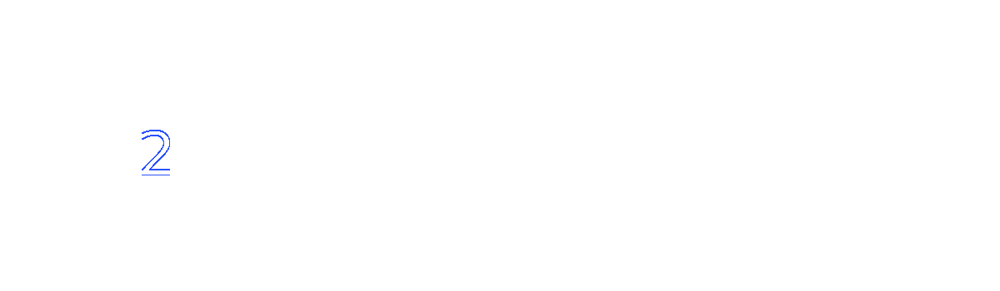
| class | regions | pixels | union bbox (CSS px) | largest px | maximum magnitude |
|---|---|---|---|---|---|
| ColorErr | 3 | 379 | 35,30 → 45,47 | 207 | total 0.2% · largest 0.1% |
| class | bbox (CSS px) | area% | magnitude | reason |
|---|---|---|---|---|
| AntialiasCoverage | 35,30 → 45,45 | 0.1 | ΔRGB(-7,-8,-5) | antialiasing coverage residue on a shared outline |
| AntialiasCoverage | 35,32 → 43,45 | 0.08 | ΔRGB(-1,-1,-1) | antialiasing coverage residue on a shared outline |
| AntialiasCoverage | 35,47 → 45,47 | 0.02 | ΔRGB(199,236,154) | antialiasing coverage residue on a shared outline |
1<!DOCTYPE html>
2<html lang="en">
3<head>
4<meta charset="utf-8">
5<title>vertical-align sub</title>
6<style>
7 @page { size: 384px 112px; margin: 0; }
8 html { font-family: ParitySans; line-height: 1.5; }
9 * { margin: 0; box-sizing: border-box; }
10 html, body { background: #ffffff; }
11 .region {
12 width: 260px;
13 margin: 20px;
14 padding: 10px;
15 border: 2px solid #000000;
16 background: #caf0f8;
17 }
18 .t {
19 font-family: ParitySans;
20 font-size: 28px;
21 line-height: 1.4;
22 color: #03045e;
23 }
24</style>
25</head>
26<body>
27 <div class="region">
28 <div class="t">H<sub>2</sub>O</div>
29 </div>
30</body>
31</html>